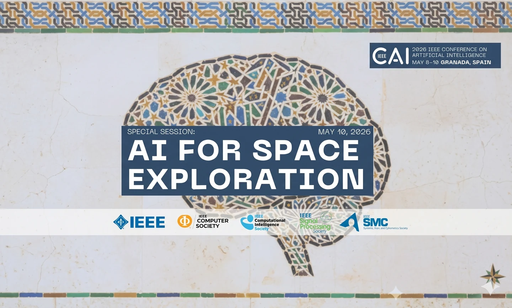

May 10, 2026 · Granada, Spain
AI for Space Exploration at IEEE CAI
Organizer and session chair
Inaugural special session organized with NASA Ames at the IEEE Conference on Artificial Intelligence.
11:30–13:30 · Aula 109, Escuela Técnica Superior de Ingeniería de Caminos, Canales y Puertos, University of Granada